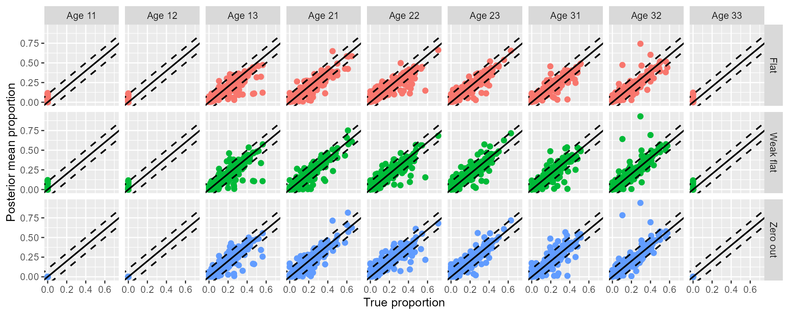
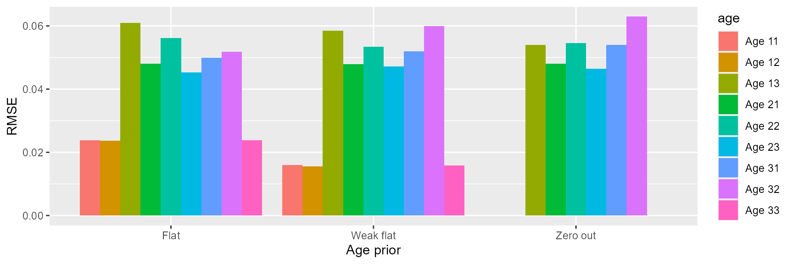
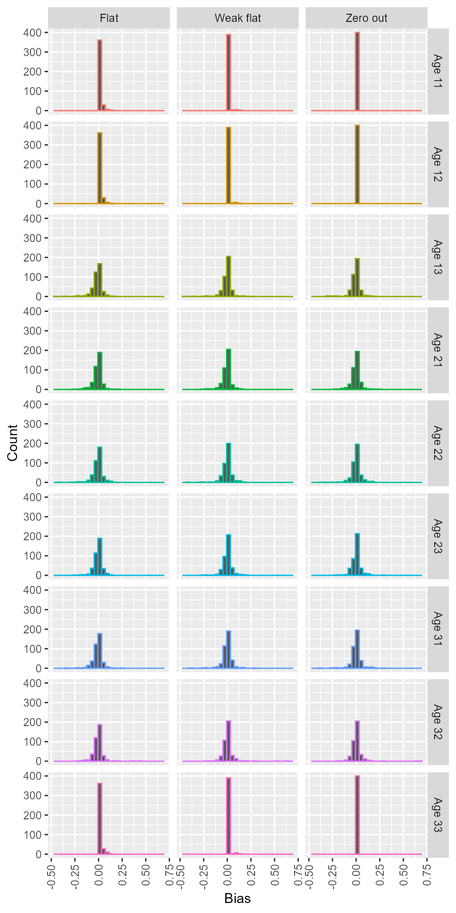
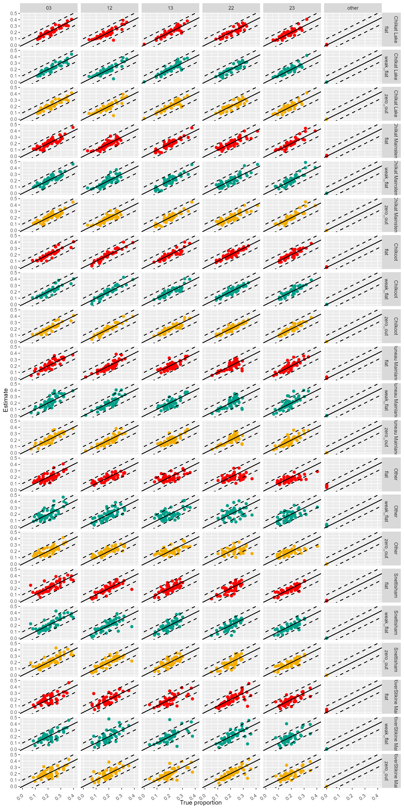
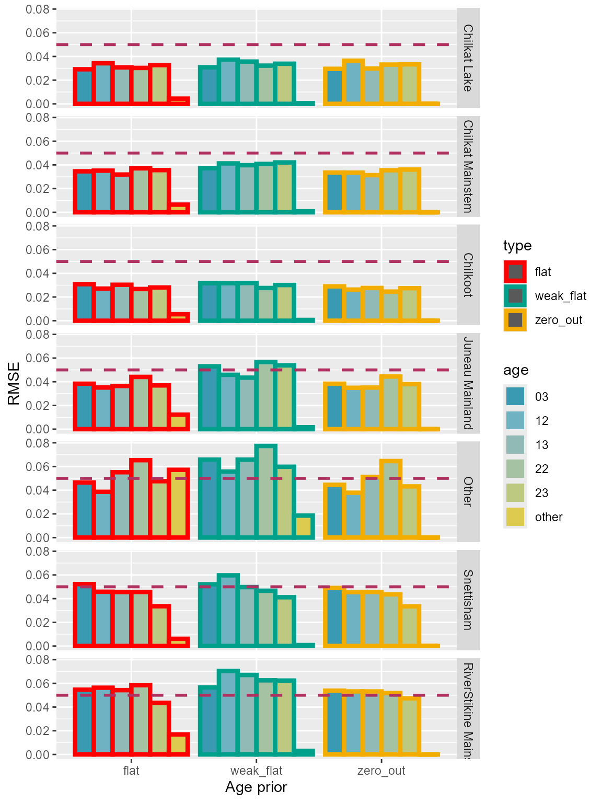
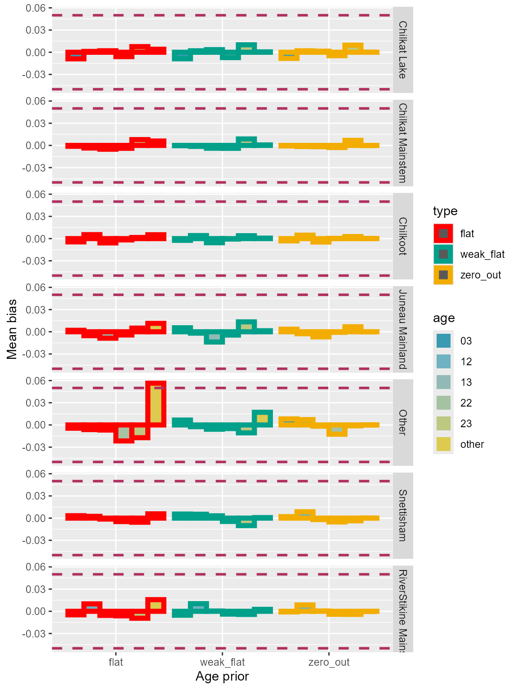
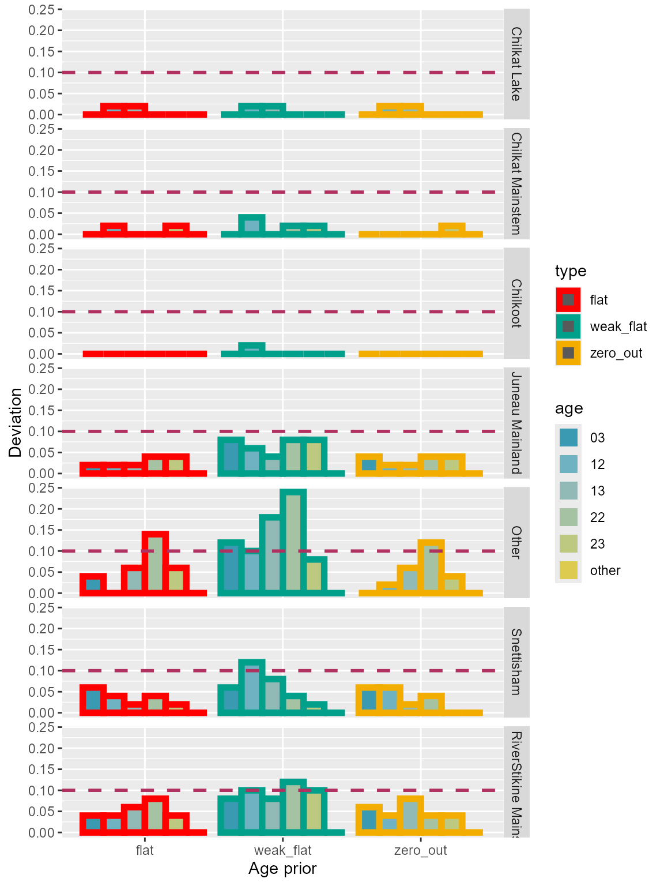
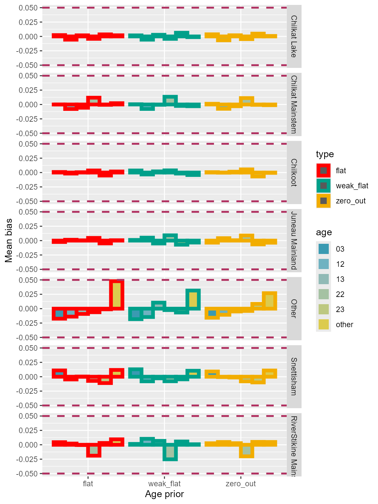
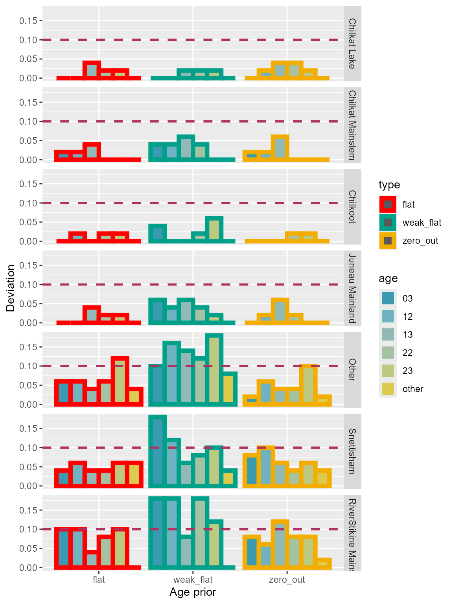

Age priors configurations comparison
Mansplaining age priors of MAGMA
Bobby Hsu
January 08, 2026
Source:vignettes/articles/age_prior_comparison.Rmd
age_prior_comparison.RmdObjectives
- Mansplain the roles of age priors in the MAGMA model.
- Compare three different setups for age priors: 1) conventional flat priors with an equal value among age classes, 2) flat priors with a small value and equal among age classes, and 3) unequal prior values with greater weights concentrating on the major age classes and close-to-zero values for age classes unobserved in the harvest sample.
Background
Bayesian estimation of MAGMA parameters (i.e., stock proportions, age-by-stock composition, and individual group membership assignments) is done through a type of Markov Chain Monte Carlo method called the Gibbs sampler. The Gibbs sampler algorithm isolates the model parameters as separate full conditional distributions1, which can be dealt with individually and are easier to work with than a joint distribution of the parameters.
In the Gibbs sampler algorithm for MAGMA, values for the age proportions are updated based on a Dirichlet distribution with parameters equal to the sum of 1) the tallies of individuals in each age class of each population in the mixture and 2) the prior value specified for each age class. The algorithm then updates the age class memberships for individuals without an observed age based on the updated age proportions. New summaries are tallied for the age classes and new age proportions are being updated. The cycle is repeated until the simulated values converged to the posterior distribution of the age proportions.
Conventionally, we set the values of age priors equally among age classes. For example, if we have nine age classes to estimate, the value of prior for each age class is , and we do so for all populations. If we counted 10 individuals in a specific age class of a population, the ratio for the empirical data and prior is 90:1. It is easy to see how the empirical data often overpower the prior in the Gibbs sampler algorithm. However, if we have no (or a very small number of) individuals in an age class, age prior will be more influential than empirical data in determining the age proportion.
A likelihood-based model shows zero, or near-zero, for an estimate if no individual is observed in that age class. However, unlike likelihood-based models, our current setup for age priors of MAGMA model prevents any age class from being zero, even if we observed no individual in such age class. It is not necessarily a bad thing to not force the proportion of an unobserved age class to be zero (i.e., “zero-out”). One may believe that an age class exists in the population, but we do not always end up with individuals of that age class in the sample because they are rare. By assigning a small value to the prior of such age class, we ensure that at least some quantity of proportion will be allocated to that age class during events of absence.
Still, some people prefer to zero-out the unobserved age classes so the MAGMA model estimates are more comparable to a likelihood-based framework. Updated MAGMA package has an option for assigning 0’s2 as age priors of unobserved age classes. This setup effectively zero-out the proportion of an age class if it is unobserved in the mixture. There is another option in the MAGMA package that assigns a small value3 to age priors equally across all age classes. This third option minimizes the proportions of unobserved age classes without forcing them to be zeros.
However, we don’t know the effects of the new setups have on the estimation of MAGMA model parameters. In this document, I use a simulation analysis to assess the possible effects of age priors on the accuracy and precision of the estimation of the MAGMA model. I run simulated data sets using the above-mentioned three age prior configurations and compare the results.
Update for September 2024 (Lynn Canal)
I updated the analysis with Lynn Canal sockeye baseline and a multi-stratum set up. Lynn Canal post-season reporting has 251 collections divided into seven groups. Majority of collections are included in the “Other” reporting group. For age, there are 15 classes total. Five of them are major age classes (03, 12, 13, 22, 23), and the rest are included in “other.”
Methods
Yukon Chinook
I used a Yukon Chinook baseline for the simulation analysis. The Chinook baseline was modified in a previous analysis and contained only a portion of the original collections. This modified baseline had a marker-set of 380 loci that could differentiate Chinook salmon among four reporting groups from the middle/upper Yukon River (Koyukuk, Tanana, Upper U.S., and Canada; Lee et al. 2021). I used the modified baseline to generate 100 sets of MAGMA mixtures (single district, single subdistrict, and single week) with randomly set age-by-stock compositions, and ran the mixtures using the three configurations of age priors. Finally, I calculated and compared root mean-square-errors (RMSE), deviations, and bias for the 100 analyses.
Procedures for generating one set of MAGMA data are as follows:
Randomly set proportions for the four reporting groups. Based on the set proportions, randomly allocate 190 individuals to populations within each reporting group.
Simulate genotypes of mixture individuals based on the baseline allele frequencies corresponding to their assigned population memberships. The simulated values are drawn from multinomial distributions.
randomly set proportions for the age-by-stock compositions. The age-by-stock composition is a matrix with rows represent reporting groups and columns represent age classes. There are nine age classes and they are ages 1.1, 1.2, 1.3, 2.1, 2.2, 2.3, 3.1, 3.2, and 3.3. The proportions for ages 1.1, 1.2, and 3.3 are always 0’s in this analysis, and the rest are randomly set. The age proportions within each reporting group add up to 1.
Assign an age for each mixture individual based on its assigned reporting group membership. Randomly withheld the age identities for 15% of the mixture individuals.
Format the data set for MAGMA model (i.e., magmatize data). There is only one district, one subdistrict, and one week in the mixture data set.
I ran each of the 100 MAGMA data sets with three configurations of age priors: 1) “flat”: conventional flat priors with an equal value among age classes, 2) “weak flat”: flat priors with a small value and equal among age classes, and 3) “zero out”: unequal prior values with greater weights concentrating on the major age classes and 0’s for age classes unobserved in the harvest sample. I ran each model with 1,000 iterations, 500 burn-ins, no thinning, and four chains in the “hybrid” conditional GSI mode. I compared the posterior means and the true proportions of the nine age classes and calculated RMSE and bias/deviation. RMSE is calculated as , where was the number of cross-validation analyses, was the true proportion of age for the th analysis, and was the posterior mean proportion of age for the th analysis. Bias was derived by taking the difference between the posterior mean and the true proportion of each age class for each cross-validation analysis. “Deviation 0.1” quantified the portion of the cross-validation analyses with absolute biases greater or equal to 0.1.
Update for September 2024 (Lynn Canal)
Simulations for Lynn Canal followed the same procedures as before, with addition of multiple strata. There were one district and two subdistricts with two weeks each. Age-by-stock composition was a matrix for the whole district. I ran two sets of simulations. The first set had 0 portion for all minor age classes. The second set had a small portion (randomly set) for some of the minor age classes.
Harvest were randomly selected from the 2023 harvest record to represent a simulated harvest for the four strata in each iteration of the analysis. Sample size for each stratum was randomly drawn from a negative binomial distribution with a mean of 190 fish and a dispersion parameter of 8 (Neg-bin( = 190, size = 8)). I ran total of 50 iterations (to save time).
Results
Yukon Chinook
Precision
I plotted the comparisons between the posterior means and the true values in Figure 1. performance of the three configurations were similar for the major age classes (1.3, 2.1, 2.2, 2.3, 3.1, and 3.2). “Zero out” configuration performed better for the age classes with 0 proportion (1.1, 1.2, and 3.3) compared to others (Figure 1).
 Figure 1: Comparison between the posterior means and the true values of the 100 cross-validation analyses for the three age prior configurations: ‘flat,’ ‘weak flat,’ and ‘zero out.’ Red diagonal line represents 1:1 relationship between the true proportions and the posterior means. Dashed red lines mark the ± 0.1 deviation from the 1:1 line.
RMSE
For the major age classes, performances of the three configuration were similar. “Zero out” had the lowest RMSE for age classes with 0 proportion (Table 1; Figure 2).
Table 1: Comparison of root mean-square-errors for each age class among the three age prior configurations.
 Figure 2: Root mean-square-errors of each age class for the three age prior configurations.
Bias
Three configurations for age priors exhibited similar amount of biases for the major age classes (Figure 3). For the age classes with 0 proportion, “weak flat” showed less biases than “flat,” and “zero out” had the least biases among the three configurations (Figure 3).

Figure 3: Bias of each age class for the three age prior configurations.
Deviation
“Weak flat” prior configuration seemed to perform slightly better than others for the major age classes, but it was mostly due to the randomness in the simulations. Overall, the three configurations showed similar performances. For the age classes with 0 proportion, “zero out” had the least deviations (Table 2; Figure 4).
Table 2: Comparison of deviation for each age class among the three age prior configurations.
 Figure 4: Deviation
of each age class for the three age prior configurations.
Figure 4: Deviation
of each age class for the three age prior configurations.
Update for September 2024 (Lynn Canal)
True 0 proportions for minor age classes
Precision
Performance of the three configurations were similar for the three configurations (Figure 5). Dots for the “weak flat” configuration seemed more diffused compared to others, but not very noticeable (Figure 5).
 Figure 5: Comparison between the posterior means and the true values of the 50 cross-validation analyses for the three age prior configurations: ‘flat,’ ‘weak flat,’ and ‘zero out’ using Lynn Canal sockeye baseline. True 0 proportions for minor age classes. Diagonal line represents 1:1 relationship between the true proportions and the posterior means. Dashed lines mark the ± 0.1 deviation from the 1:1 line.
RMSE
“Other” age class of “Other” reporting group had the highest errors across all three configurations. “Weak-flat” priors had higher errors overall compared to “flat” and “zero-out” (Table 3; Figure 6).
Table 3: Comparison of root mean-square-errors for each age class among the three age prior configurations using Lynn Canal sockeye baseline. True 0 proportions for minor age classes.

Figure 6: Root mean-square-errors of each age class for the three age prior configurations using Lynn Canal sockeye baseline. True 0 proportions for minor age classes.
Bias
Three configurations for age priors exhibited similar amount of biases for the major age classes (Figure 7). For the “other” age classes with 0 proportions, “flat” priors showed the most biases. And “zero out” priors had the least biases among the three configurations (Figure 7).

Figure 7: Bias of each age class for the three age prior configurations using Lynn Canal sockeye baseline. True 0 proportions for minor age classes.
Deviation
“Weak flat” prior configuration seemed to have the most deviation overall compared to others. For the “other” age class of “Other” reporting group, “zero out” and “flat” priors showed similar amount of deviations (Table 4; Figure 8).
Table 4: Comparison of deviation for each age class among the three age prior configurations using Lynn Canal sockeye baseline. True 0 proportions for minor age classes.

Figure 8: Deviation of each age class for the three age prior configurations using Lynn Canal sockeye baseline. True 0 proportions for minor age classes.
Small proportions for some of the minor age classes
Precision
Performance of the “weak flat” configurations seemed to be less ideal compared to “flat” and “zero out”. Dots of “weak flat” configuration seemed more diffused overall (Figure 9).
 Figure 9: Comparison between the posterior means and the true values of
the 50 cross-validation analyses for the three age prior configurations:
‘flat,’ ‘weak flat,’ and ‘zero out’ using Lynn Canal sockeye baseline.
Small proportions for some of the minor age classes. Diagonal line
represents 1:1 relationship between the true proportions and the
posterior means. Dashed lines mark the ± 0.1 deviation from the 1:1
line.
Figure 9: Comparison between the posterior means and the true values of
the 50 cross-validation analyses for the three age prior configurations:
‘flat,’ ‘weak flat,’ and ‘zero out’ using Lynn Canal sockeye baseline.
Small proportions for some of the minor age classes. Diagonal line
represents 1:1 relationship between the true proportions and the
posterior means. Dashed lines mark the ± 0.1 deviation from the 1:1
line.
RMSE
“Zero out” and “flat” priors showed similar amount of errors, and “weak flat” had the highest RMSE overall (Table 5; Figure 10).
Table 5: Comparison of root mean-square-errors for each age class among the three age prior configurations using Lynn Canal sockeye baseline. Small proportions for some of the minor age classes.

Figure 10: Root mean-square-errors of each age class for the three age prior configurations using Lynn Canal sockeye baseline. Small proportions for some of the minor age classes.
Bias
Three configurations showed similar amount of biases (Figure 11).

Figure 11: Bias of each age class for the three age prior configurations using Lynn Canal sockeye baseline. Small proportions for some of the minor age classes.
Deviation
“Weak flat” prior configuration seemed to have the most deviations compared to others (Table 6,; Figure 12).
Table 6: Comparison of deviation for each age class among the three age prior configurations using Lynn Canal sockeye baseline. Small proportions for some of the minor age classes.

Figure 12: Deviation of each age class for the three age prior configurations using Lynn Canal sockeye baseline. Small proportions for some of the minor age classes.
Discussion
Yukon Chinook
The comparison of 100 cross-validation analyses of the three age prior configurations showed similar precision and accuracy for the major age classes. “Zero out” and “weak flat” priors had the intended purpose of reducing bias for the age classes with 0 proportion.
It is worth noting that the “true values” in these cross-validation analyses were the observed proportions of the simulated data. Proportions of the simulated data might deviate from the (randomly set) population values that were used as the reference when constructing the mixture samples. The differences between the simulated values and the true population values were referred to as the sampling errors, which I ignored mainly to confine the variables of the analysis to the configurations of age priors. Still, it might be worthwhile to assess the performance of the MAGMA model with presence of sampling errors in the future analyses.
Update for September 2024 (Lynn Canal)
The set up for Lynn Canal lumps majority of collections into “Other” reporting group and makes it the biggest. Furthermore, “other” age class is also the biggest age class with 10 minor age classes. Cross-validation simulations demonstrate how the biases in each groups are accumulated and show up in the results. “zero out” configuration helps minimizing the biases in the minor age classes if we don’t expect to see them in the data. However, if there are a low number of samples in minor age classes observed in the data, the results are similar for “flat” and “zero out” configurations.
Simulation using Lynn Canal sockeye baseline has a multi-stratum set up. Multiple strata might also increase biases in the “other” age classes because the estimates are averaged across the strata. But I’m not quite sure the influence of the multi-strata.
Talking to Kyle (GCL fishery geneticist), it seems that biases in “other” groups (age class and reporting) would not be a big concern because they consist of only a small portion in MSA. Plus, these groups are not used by the SEAK biologists.